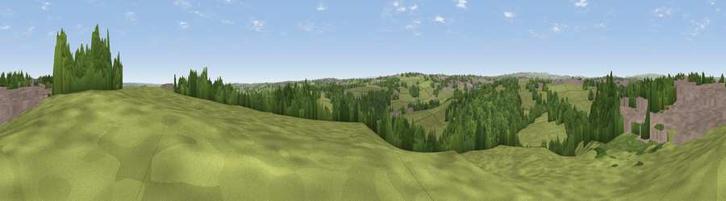

Viewpoint near Fulneck Moravian Settlement
#30180 in England · top 58% of its area beats it · near Fulneck Moravian SettlementWhere it is
The exact computed spot (SE 21475 32375). Click the marker for map links.
The view, rendered

A 360° render of this exact spot computed from the terrain model, tree cover and land cover — summer colours, afternoon light, calibrated against photographs of famous viewpoints. Real trees, hedges and buildings will differ in detail.
The panorama
Grey silhouette: terrain skyline in each direction (720 bearings, Earth curvature and refraction included). Dashed green: skyline with trees (+15 m) and buildings (+8 m) as obstacles. Blue strip: how far the ground is visible on each bearing.
Where the view opens
Wedge length = distance to the farthest visible ground on that bearing (vegetation-aware). Rings at 10, 25 and 50 km.
What fills the view
49% grassland · 31% woodland · 19% built-up ·
Angular shares of the visible panorama (visual magnitude), not map area. Landscape diversity 0.46 (0–1 Shannon).
Key numbers
More beautiful places nearby
The staircase of upgrades: each row has a higher view potential than everything closer. Driving times are estimates from straight-line distance, calibrated against real road routing — check an actual route before setting out.
| Place | Direction | Drive | Score |
|---|---|---|---|
| Viewpoint near Pudsey | NNW · 1 km | ~4 min | 44.9 |
| Viewpoint near Calverley | NNW · 4 km | ~9 min | 50.7 |
| Viewpoint near Wrose | NW · 7 km | ~15 min | 66.5 |
| Rawdon Billing | N · 7 km | ~15 min | 72.7 |
| Viewpoint near Otley | N · 12 km | ~22 min | 77.5 |
| Viewpoint near East Witton | N · 53 km | ~75 min | 77.8 |
| Darwen Hill | WSW · 55 km | ~76 min | 80.7 |
| White Brow | WSW · 59 km | ~81 min | 82.9 |
53.78726, -1.67553 · source: screening · position refined by local search. Computed location — check access rights before visiting.